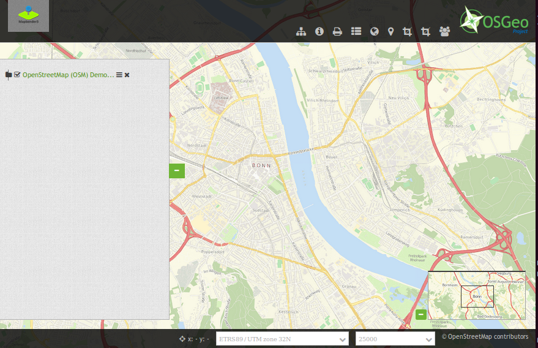

HTML Element¶
This element allows you to add generic HTML anywhere in your application. In the generic HTML the following variables are available: “application” (Entity Application), “entity” (Entity HTMLElement) and “configuration”.
{kind=link}
Configuration¶
For example you can add an image to your application:
<img src='http://mapbender3.org/sites/default/files/OSGeo_project.png' height='60px'>
{kind=link}
- Title: Title of the element. The title will be listed in “Layouts”. It will be indicated if “Show label” is activated.
- Content: Content of the HTML-element. The variables: “application”, “entity” und “configuration” are available in the content.
- Classes: html-element-inline, my-special-css-class
YAML-Definition:¶
content: <p>Hello, World!</p><p>Application: {{ application.title |trans }}</p> # the variables: "application", "entity" und "configuration" are available in the content.
classes: my-special-css-class
Class, Widget & Style¶
- Class: Mapbender\CoreBundle\Element\HTMLElement
- Widget: mapbender.mbHTMLElement
HTTP Callbacks¶
None.
JavaScript API¶
None.
JavaScript Signals¶
None.
Examples¶
Add an image
<img src='http://mapbender3.org/sites/default/files/OSGeo_project.png'>
Add an Link
<a href='http://mapbender3.org' target='_blank'>Go to the Mapbender3 Webside</a>